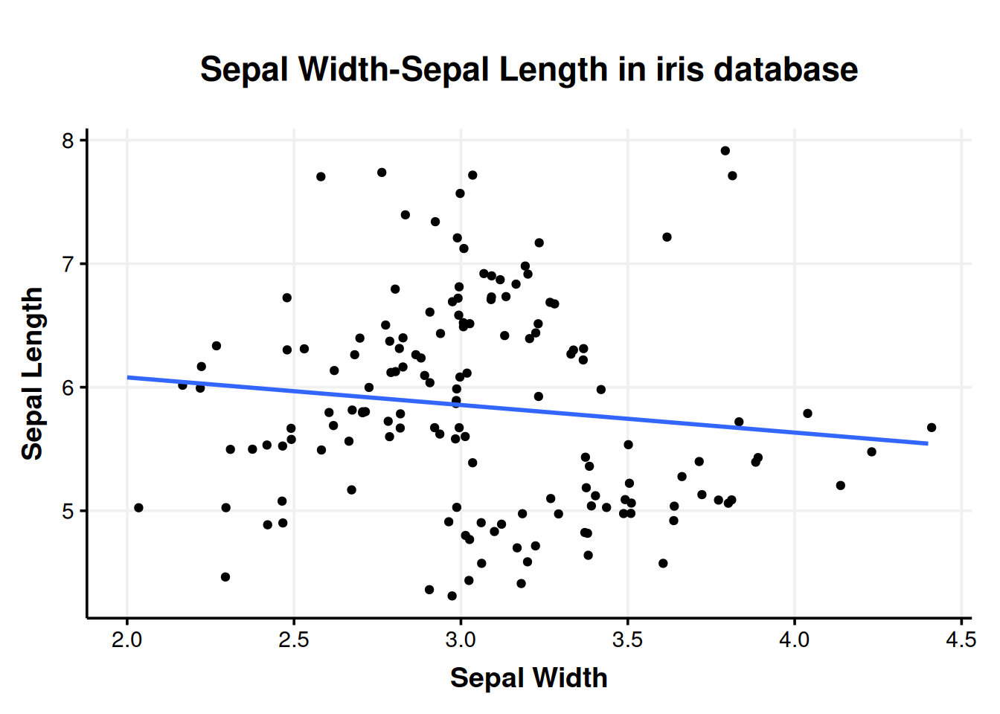
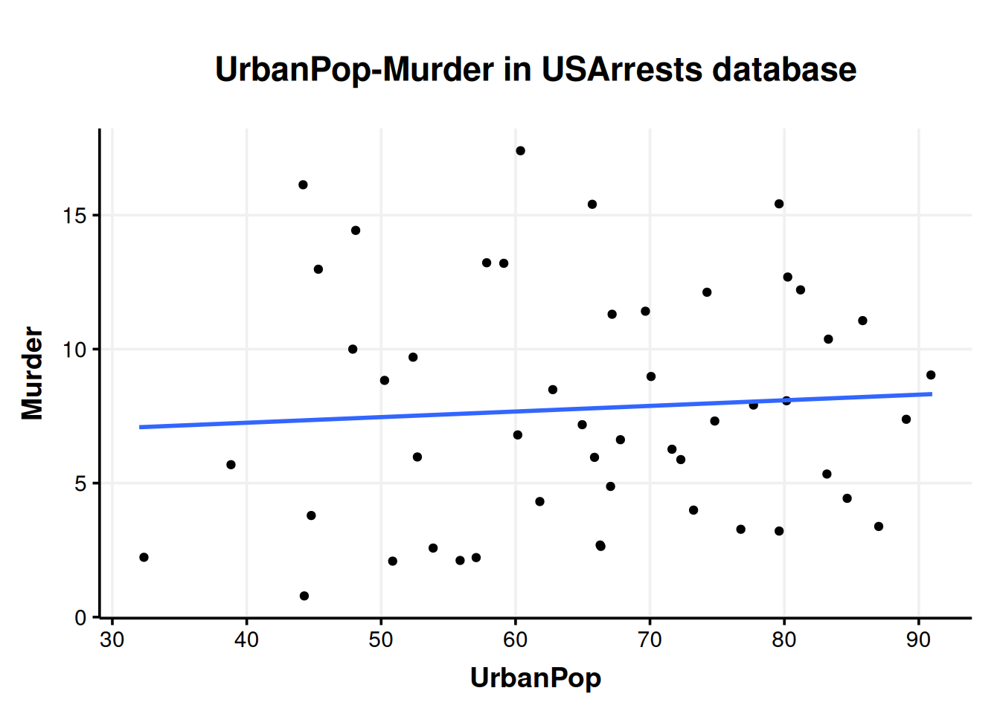

opisowe <- function(df, group, ...) {
df %>%
group_by(group) %>%
summarise(
across(
..., # wybrane kolumny
.fns = list(
N = \(x) sum(!is.na(x)), # liczba niepustych
M = \(x) mean(x, na.rm = TRUE), # średnia
SD = \(x) sd(x, na.rm = TRUE), # odchylenie standardowe
A = agricolae::skewness, # skośność
K = agricolae::kurtosis, # kurtoza
`NA` = \(x) sum(is.na(x)) # liczba brakujących
)
)
)
}Metaprogramowanie w R
Dlaczego moja funkcja nie działa?
Piękno pakietu
tidyverse polega na tym, że zupełnie zmienia sposób w jaki wpisujemy nazwy kolumn do funkcji – bez głębszego zastanawiania się. To zupełnie inaczej, niż w większości języków programowania. To tzw. Tidy Evaluation (Tidy Eval) ułatwia pisanie zwykłego kodu, ale zaskakująco utrudnia pisanie własnych funkcji.
1 Przykład motywacyjny
Wyobraźmy sobie, że chcemy napisać własną funkcję, która będzie za nas odwalać jakąś głupią robotę. Możemy na przykład mieć jakiś skomplikowany proces modelowania, który zawsze wygląda podobnie. Prostszy przykład – załóżmy, że zawsze liczymy dokładnie taki sam zestaw statystyk opisowych i chcemy mieć już funkcję na przyszłość, która policzy je nam sama. Dokładnie tak zrobiłem, jak na III roku psychologii miałem kolokwium ze statystyki. Zapiszmy więc taką funkcję.
Przejdźmy sobie przez tę funkcję krok po kroku. Po pierwsze dałem jej 3 argumenty – df, group i tajemnicze …. df To baza danych, group to kolumna, po której chcemy agregować dane (patrz tutaj). Ostatni argument to tzw. ellipsis czyli wielokropek i czasem spotykamy go w dokumentacji, np. w funkcji select(). W wielokropku chodzi o to, że mogę tam wsadzić dowolną liczbę rzeczy, np. dowolnie wiele nazw kolumn. W naszym wypadku będziemy wrzucać tam nazwy kolumn, dla których chcemy liczyć nasze statystyki. Nie wiemy, czy będzie to jedna kolumna, 10 kolumn, czy wyrażenie tidyselect (np. starts_with("H")) więc używamy wielokropka.
Bazę danych grupujemy i wrzucamy do funkcji agregującej summarise(). Ponieważ chcemy wykonać wiele razy ten sam zestaw obliczeń na wielu kolumnach, korzystamy z across() (patrz tutaj). Dalej across() przyjmuje listę funkcji, które chcemy zastosować. Listę, czyli wszystkie komendy zamykam w list()1. Większość funkcji podaję jako funkcje anonimowe (patrz tutaj), bo albo muszę podać dodatkowe argumenty, albo to funkcje kombinowane, np. \(x) sum(!is.na(x)).
Ciekawsze rzeczy to:
\(x) sum(!is.na(x))– sama funkcjais.na()zwracaTRUElubFALSEw zależności od tego, czy dana wartość jest brakująca. Pod maskąTRUEto 1, aFALSEto 0, więc jeśli zsumujemy wynik działaniais.na(), to dostaniemy liczbęTRUE. Ponieważis.na()zwracaTRUE, jeśli dane są brakujące, to sumującis.na()dostałbym liczbęNA. Dlatego zaprzeczamis.na()operatorem!(patrz tutaj).- Skośność i kurtoza – to są jedyne funkcje, które stosuję tutaj jak w mordę strzelił, bez kombinowania, więc podaję je bez nawiasów. Jak wspominałem tutaj, gdy nie ma nawiasów, wskazujemy na samą funkcję, a z nawiasami na to, co funkcja z siebie wywala.
`NA`– słowoNAma w R swoje znaczenie. Takich słów normalnie nie możemy używać jako nazw kolumn. Zazwyczaj. Jeśli bardzo chcemy, możemy ująć taką niesyntaktyczną2 nazwę w backticki (patrz tutaj).
Taka funkcja powinna działać. Jeśli uruchomimy ją w konsoli na konkretnym przykładzie, to zadziała.
iris %>%
group_by(Species) %>%
summarise(
across(
c(Sepal.Length, Sepal.Width), # wybrane kolumny
.fns = list(
N = \(x) sum(!is.na(x)), # liczba niepustych
M = \(x) mean(x, na.rm = TRUE), # średnia
SD = \(x) sd(x, na.rm = TRUE), # odchylenie standardowe
A = agricolae::skewness, # skośność
K = agricolae::kurtosis, # kurtoza
`NA` = \(x) sum(is.na(x)) # liczba brakujących
)
)
)#> # A tibble: 3 × 13
#> Species Sepal.Length_N Sepal.Length_M Sepal.Length_SD Sepal.Length_A
#> <fct> <int> <dbl> <dbl> <dbl>
#> 1 setosa 50 5.01 0.352 0.120
#> 2 versicolor 50 5.94 0.516 0.105
#> 3 virginica 50 6.59 0.636 0.118
#> # ℹ 8 more variables: Sepal.Length_K <dbl>, Sepal.Length_NA <int>,
#> # Sepal.Width_N <int>, Sepal.Width_M <dbl>, Sepal.Width_SD <dbl>,
#> # Sepal.Width_A <dbl>, Sepal.Width_K <dbl>, Sepal.Width_NA <int>
Nie jest to może najładniejsza tabela, ale jest. Spróbujmy jednak to samo wywołać za pomocą naszej funkcji, która przecież niby robi to samo.
opisowe(iris, Species, Sepal.Length, Sepal.Width)#> Error in `group_by()`:
#> ! Must group by variables found in `.data`.
#> ✖ Column `group` is not found.
Ups. Nie działa. Ale czemu? Błąd mówi, że group_by() nie znalazło kolumny o nazwie group. I bardzo słusznie, że nie znalazło, bo nie ma takiej kolumny w iris. Ale w ogóle nie miało jej szukać! Miało szukać kolumny Species, którą podaliśmy jako argument? Dlaczego group_by() szuka kolumny group?
2 Tidy Eval
To, co teraz opowiem, jest uznawane za bardzo zaawansowaną część języka R. Najgłębiej opisuje te zagadnienia Hadley Wickham3 w książce Advanced R. Sam bardzo długo próbowałem to zrozumieć, aż w końcu udało mi się niedawno, podczas pisania pakietu mtscr. Gdy wreszcie to zrozumiałem, to uznałem, że nie jest to aż takie trudne, tylko opisane jak dla informatyków, matematyków, inżynierów, a nie jak dla psychologów, socjologów, ekonomistów czy całej reszty ludzkości. Dokładnie ten sam problem mam ze statystyką w ogóle.
Jednocześnie nie jest to coś, co większość useRów musi rozumieć. Taka potrzeba pojawia się zazwyczaj głęboko, późno, gdy chcemy usprawnić nasz kod własnymi funkcjami4 albo musimy napisać jakiś pakiet. Zazwyczaj pierwszy raz, kiedy chcemy napisać funkcję robiącą wykres w ggplot2 i się blokujemy. Wtedy znajdujemy na StackOverflow informację, że trzeba nazwy kolumn wziąć w podwójne klamry (np. {{column}}) i tyle nam wystarczy, nie musimy zajmować się tym głębiej. Do czasu, kiedy jednak musimy.
Skąd więc biorą się problemy takie jak w przykładzie? To jest cena, którą płacimy za wygodne pisanie kodu. W klasycznym R, gdy chcemy coś policzyć, musimy wykorzystywać pełne nazwy kolumn. Podobnie gdy coś filtrujemy.
iris[iris$Sepal.Length > 5, c("Species", "Sepal.Length")] %>%
as_tibble()#> # A tibble: 118 × 2
#> Species Sepal.Length
#> <fct> <dbl>
#> 1 setosa 5.1
#> 2 setosa 5.4
#> 3 setosa 5.4
#> 4 setosa 5.8
#> 5 setosa 5.7
#> 6 setosa 5.4
#> 7 setosa 5.1
#> 8 setosa 5.7
#> 9 setosa 5.1
#> 10 setosa 5.4
#> # ℹ 108 more rows
Powyższa funkcja filtruje wiersze, w których Sepal.Length jest większe niż 5 oraz wybiera tylko kolumny Species i Sepal.Length. Zapis ten jest zwięzły, ale niewygodny w pisaniu i jeszcze trudniejszy w czytaniu. Całość przekonwertowałem jeszcze na tibble, żeby się ładniej wyświetlało. Dokładnie ten sam efekt uzyskamy pisząc:
iris %>%
as_tibble() %>%
select(Species, Sepal.Length) %>%
filter(Sepal.Length > 5)#> # A tibble: 118 × 2
#> Species Sepal.Length
#> <fct> <dbl>
#> 1 setosa 5.1
#> 2 setosa 5.4
#> 3 setosa 5.4
#> 4 setosa 5.8
#> 5 setosa 5.7
#> 6 setosa 5.4
#> 7 setosa 5.1
#> 8 setosa 5.7
#> 9 setosa 5.1
#> 10 setosa 5.4
#> # ℹ 108 more rows
I to da się czytać! Wszystko jest jasne, ładne i wygodne w pisaniu. Dlatego uwielbiam tidyverse i uważam, że to od tidyverse należy zaczynać naukę R. Klasyczny R jest bardzo informatyczny, nieznośny w czytaniu i pisaniu i trudno się go uczyć, zwłaszcza jako pierwszego kontaktu z programowaniem.
Zauważmy jednak pewien szczegół w tym zapisie. Nazwy kolumn są tutaj zapisane tak, jak wszystkie inne obiekty. Nie są to dosłowne ciągi znaków, nie są to pojedyncze kolumny (iris$Species), to są po prostu nazwy. Nie jest to typowe zachowanie w R. Jeśli zrobimy coś takiego:
x <- 1:8
sum(x)#> [1] 36
…to R widząc wewnątrz sum() coś, co wygląda jak obiekt, próbuje ten obiekt znaleźć i wstawić do funkcji. Dzięki temu efekt jest ten sam, co w przypadku zapisu sum(1:8). Możemy sobie wyobrazić, że wstawiając do funkcji x dajemy R pudełeczko, w którym zamknięte są liczby od 1 do 8. Gdy R ma policzyć sumę, naturalnie otwiera to pudełeczko, wyciąga te liczby i sumuje.
3 Lazy evaluation
Co ciekawe otwiera to pudełeczko dopiero wtedy, gdy już koniecznie musi, bo każemy mu coś z tym zrobić.
oszukujemy <- function(liczba, niecny_fortel) {
print(liczba + 3)
if (liczba > 10) {
print(niecny_fortel)
}
}
jakas_liczba <- 5
oszukujemy(jakas_liczba, to_nie_istnieje)#> [1] 8
Po zdefiniowaniu funkcji daliśmy R dwa pudełeczka. Jedno z etykietą jakas_liczba, drugie z etykietą niecny_fortel. Wydaliśmy polecenie wykonania naszej instrukcji z tymi dwoma pudełeczkami. Po pierwsze R miał w konsoli wydrukować zawartość pierwszego pudełeczka powiększoną o 3, co też zrobił. Żeby to zrobić, musiał to pierwsze pudełeczko otworzyć i znalazł tam 5, w związku z czym wydrukował 8. Następnie przeszedł do instrukcji warunkowej. Sprawdził czy podana przez nas liczba (tj. 5) jest większa niż 10. Że nie jest, to zignorował całkowicie, co było w klamrach. Zwróćmy uwagę, że funkcja zakończyła pracę bez błędu. Dlaczego miałby pojawić się błąd? Bo zmienna to_nie_istnieje, bez zaskoczenia, nie istnieje. Używając naszej metafory, daliśmy R puste pudełeczko. Ale R się nie zorientował, bo w ogóle nie musiał tego pudełeczka otwierać. Co się stanie, jeśli otworzy?
oszukujemy(12, to_nie_istnieje)#> [1] 15
#> Error in eval(expr, envir, enclos): nie znaleziono obiektu 'to_nie_istnieje'
Tym razem podaliśmy liczbę 12. Ponieważ 12 jest większe niż 10, R odczytał polecenie, że ma zawartość drugiego pudełka wydrukować w konsoli. Otworzył więc to pudełko, zorientował się, że jest puste i wtedy dopiero zaczął krzyczeć. Ta właściwość R, że otwiera pudełka dopiero wtedy, gdy są potrzebne, określana jest jako lazy evaluation. Za moment pokażę, jak możemy to wykorzystać.
4 Tidy Eval (ciąg dalszy)
Ten standardowy porządek do góry nogami wywraca tidyverse. Zwróćmy uwagę znów na przykład z wybieraniem kolumn i filtrowaniem. Podaliśmy R jakieś pudełka, które w gruncie rzeczy są puste. W naszym środowisku nie ma takiego obiektu jak Sepal.Length. Owszem jest taka kolumna w ramce danych iris, ale ramka danych sama w sobie jest niejako pudłem. Jeśli chcemy powiedzieć R „Przynieś mi pudełko Sepal.Length z pudła iris normalnie powinniśmy zapisać iris$Sepal.Length5. A jednak funkcje takie jak filter() czy select() w jakiś sposób same ogarniają, że podajemy im nazwy kolumn, a nie obiekty i że mają tych kolumn szukać wewnątrz iris.
To nasze otwieranie pudełek nazywa się w informatyce evaluation i dokładnie oznacza znajdowanie wartości jakiegoś wyrażenia (np. że wyrażenie jakas_liczba ma wartość 5 albo że wyrażenie sum(1:3) ma wartość 6). Ta niestandardowa ewaluacja, którą wykorzystują pakiety wchodzące w skład tidyverse i którą niemo uznajemy za standard we współczesnym kodowaniu w R, nazywa się Tidy Evaluation albo w skrócie Tidy Eval. Pisanie funkcji tak, żeby potrafiły korzystać z Tidy Eval oraz wywoływanie funkcji w sytuacjach, gdy Tidy Eval wywołuje problemy, będzie tematem tego wpisu.
Istota Tidy Eval polega na tym, że możemy powiedzieć R dwie rzeczy – „nie otwieraj tego pudełka teraz” oraz „teraz możesz otworzyć to pudełko”. Możemy więc dokładnie sterować, kiedy R dokona ewaluacji danego wyrażenia. Nie wydaje się to bardzo znaczące, ale naprawdę jest.
5 Niejednoznaczność i {{ }}
Nie wchodźmy na ten moment w szczegóły, a propos tego, jak działają funkcje tidyverse. Przyjmijmy na ten moment, że potrafią one traktować coś, co inne funkcje uznałyby za obiekt, jako nazwę kolumny. To rodzi nam potencjał do pewnej niejednoznaczności. Kiedy piszemy iris$Sepal.Length, to może jest to niewygodne, ale nie ma wątpliwości, o co nam chodzi. Niejednoznaczność pojawiła się po raz pierwszy, gdy w naszej funkcji opisowe zapisaliśmy group_by(group)
opisowe <- function(df, group, ...) {
df %>%
group_by(group) %>% # tutaj funkcja wariuje
summarise(
across(
...,
.fns = list(
N = \(x) sum(!is.na(x)),
M = \(x) mean(x, na.rm = TRUE),
SD = \(x) sd(x, na.rm = TRUE),
A = agricolae::skewness,
K = agricolae::kurtosis,
`NA` = \(x) sum(is.na(x))
)
)
)
}Gdy zapisaliśmy tę instrukcję, nasza funkcja zwariowała, bo poszła następującą logiką: muszę w bazie danych iris znaleźć kolumnę group. Normalnie zadziałałoby to świetnie. W końcu dokładnie o to nam chodzi, gdy piszemy na przykład iris %>% group_by(Species) – w bazie danych iris pogrupuj po kolumnie Species. Tym razem nie chodzi nam jednak o kolumnę group a właśnie o obiekt group i to, co w sobie zawiera – nazwę kolumny Species.
Rozszerzmy trochę naszą metaforę z pudełkami. Gdy wywołujemy funkcję, tak naprawdę mamy dwa pudełka. Lepiej to widać, jak zapiszemy naszą funkcję tak:
# Przypadek 1.
log10(x = 100)#> [1] 2
# Przypadek 2.
liczba <- 100
log10(x = liczba)#> [1] 2
Efekt działania obu tych wywołań jest taki sam – jest nim logarytm dziesiętny ze 100, czyli 2. W pierwszym wypadku wpakowaliśmy 100 do funkcji bezpośrednio. Innymi słowy do pudełka z napisem x wpakowaliśmy liczbę 100. x To nazwa (jedynego) argumentu funkcji log10(). W drugim przypadku wpakowaliśmy liczbę 100 do pudełka z napisem liczba i dopiero to pudełko chcemy włożyć do pudełka x. Ale R nie lubi matrioszek. R nie włoży pudełka do pudełka. Zanim R włoży coś do pudełka x, to to rozpakuje. Do samego końca. To jest standardowy mechanizm ewaluacji – rozpakuj do końca, aż nie dostaniesz czegoś konkretnego. Jeśli pudełko liczba byłoby puste, R miałby problem.
Funkcje korzystające z Tidy Eval działają trochę inaczej. Gdy R przynosi im pudełko x, wyciąga z niego pudełko liczba i mówi “O, drugie pudełko. Czekaj, rozpakuję ci to”, na co taka funkcja group_by() odpowiada “Nie, spoko, poradzę sobie”. Dlatego R podaje jej samo pudełko liczba. Funkcja group_by() bierze to pudełko, czyta etykietę i wie, że ma szukać w bazie danych kolumny, co się nazywa “liczba”. Skąd wie, to pomińmy na teraz. Można więc powiedzieć, że standardowa ewaluacja to “rozpakowuj do końca”, a Tidy Eval to “nie rozpakowuj”.
Problem pojawia się wtedy, gdy piszemy własną funkcję, gdzie chcemy wykorzystać funkcję z Tidy Eval. Gdy w naszej funkcji opisowe wywołujemy group_by(group), to group_by() posłusznie nie rozpakowuje group, tylko szuka group w bazie danych. Chcemy więc powiedzieć funkcji group_by() “Nie, nie. To rozpakuj, to jest argument.”. Właśnie to uzyskamy za pomocą operatora {{ }} (czytane curly curly). group_by() będzie wiedziało, że to jest do rozpakowania. Dokonajmy więc pierwszej modyfikacji naszej funkcji opisowe.
opisowe <- function(df, group, ...) {
df %>%
group_by({{ group }}) %>%
summarise(
across(
...,
.fns = list(
N = \(x) sum(!is.na(x)),
M = \(x) mean(x, na.rm = TRUE),
SD = \(x) sd(x, na.rm = TRUE),
A = agricolae::skewness,
K = agricolae::kurtosis,
`NA` = \(x) sum(is.na(x))
)
)
)
}
opisowe(iris, Species, Sepal.Width, Sepal.Length)#> Error in `summarise()`:
#> ℹ In argument: `across(...)`.
#> ℹ In group 1: `Species = setosa`.
#> Caused by error in `across()`:
#> ! Can't compute column `Sepal.Width_N`.
#> Caused by error:
#> ! nie znaleziono obiektu 'Sepal.Length'
Może i ciągle nie działa, ale dostaliśmy inny błąd! To naprawdę jest powód do radości, jak się robi cokolwiek związanego z komputerami.
Jeśli chodzi o formatowanie, to mogę to zapisać jako {{group}} albo {{ group }}. Zazwyczaj nie stawiamy spacji po nawiasach, ale operator {{ }} jest wyjątkiem. Obie formy zadziałają, ale żeby podkreślić szczególne działanie tego operatora The tidyverse style guide zaleca, by stawiać te spacje.
6 Quoting i unquoting
To, co w poprzednim akapicie zrobiliśmy za pomocą {{ }} tak naprawdę składa się z dwóch kroków. Po pierwsze musieliśmy powiedzieć R, żeby nie rozpakowywał tego pudełka sam. Po drugie musimy powiedzieć funkcji group_by(), żeby ona to pudełko rozpakowała. Zaklejanie pudełka tak, żeby R nie mogło go odpakować nazywa się quoting (branie w cudzysłów). Funkcje typu select(), filter(), group_by(), summarise(), across() itd., czyli takie które stosują quoting, a które wcześniej nazywałem funkcjami z Tidy Eval, bardziej formalnie nazywają się quoting functions. Polecenie dla quoting function, by odpakowała tak zaklejone pudełko, nazywa się unquoting. Mówiąc bardziej formalnie – quoting to przyjmowanie kodu bez jego wykonywania, zatrzymywanie go. Unquoting to wykonywanie wcześniej zatrzymanego kodu.
Obie te czynności wykonujemy jednocześnie wygodnym operatorem {{ }}, ale możemy (a czasem musimy) wykonać je też osobno. Dlatego też teraz omówimy sobie serię funkcji za pomocą których możemy wykonać quoting, a następnie unquoting. Wykorzystamy sobie tutaj funkcje wdrażane przez niewielki acz przepotężny pakiet rlang należący do rodziny tidyverse. Base-R też potrafi te rzeczy robić, ale rlang nie dość, że jest standardem, to jeszcze jest łatwiejszy do zrozumienia.
7 expr() i quo()
Najbardziej bazową funkcją wykonującą quoting jest funkcja expr(). Jeśli wrzucamy do niej jakieś wyrażenie, zwraca ona nam to wyrażenie w „rozbrojonej” (w naszej metaforze zaklejonej taśmą) formie.
expr(5 + 3)#> 5 + 3
expr(jakis_argument + 3)#> jakis_argument + 3
Pierwsze wywołanie zwraca nam dosłowne 5 + 3, a nie 8 ponieważ expr() zatrzymuje wykonywanie dodawania. To wyrażenie jest teraz quoted i żeby dostać 8, musimy je wywołać ręcznie. Zwróćmy uwagę, że drugie wyrażenie też się wykonuje i zwraca dosłownie jakis_argument + 3 mimo, że takiej zmiennej nie ma przypisanej. Dzieje się tak dlatego, że odpakowanie pudełka z napisem jakis_argument również zostało zatrzymane.
Drugą funkcją wykonującą quoting jest quo(). Co ciekawe, nie jest to skrót od quoting a od quosure czyli quoted closure. Od expr() różni się tym, że poza wyrażeniem zapisuje też jego środowisko (environment). Środowisko to zbiór zmiennych, w otoczeniu których wykonywana jest funkcja. Innymi słowy to w środowisku zapisywana jest informacja, że x = 5, gdy robimy x <- 5 i to ze środowiska ten x jest brany, kiedy trzeba potem trzeba znaleźć jego wartość. Można to sobie wyobrazić jako różne półki, na których stoją pudełka ze zmiennymi. Dla zobrazowania zagadka.
x <- 5
razy_argument <- function(argument) {
x <- 100
x * argument
}
razy_argument(2)Jaki będzie wynik działania tej funkcji? 10 czy 200? Pytanie brzmi, co nasza funkcja potraktuje jako x – 5 czy 200? Jest to pytanie o tzw. scope czy też zasięg funkcji, ale można na to spojrzeć też jak na pytanie o środowisko. Z której półki funkcja weźmie pudełko z napisem x? Odpowiedź brzmi – z najbliższej. W tym wypadku najbliższa półka to środowisko samej funkcji, czyli x = 100, a więc wynik to 200. Zachęcam do zastanowienia się, co będzie wynikiem razy_argument(x)? Odpowiedź można sprawdzić w swojej konsoli.
Obiekt typu quosure zapisuje więc nie tylko wyrażenie, ale też informację, w jakim środowisku zostało to wyrażenie zatrzymane. Załóżmy, że stworzyliśmy takie wyrażenie w środowisku globalnym.
nasz_quosure <- quo(sum(x))
nasz_quosure#> <quosure>
#> expr: ^sum(x)
#> env: global
Widzimy, że poza samym wyrażeniem sum(x) quosure zawiera też informację o środowisku. Jeśli teraz wykonamy to wyrażenie (o tym jak wykonywać będzie później), to R weźmie x zawsze z półki global, a nie z najbliższej.
quosure_z_x <- quo(x)
x <- 5
dodaj_dwa <- function(liczba) {
x <- 100
eval_tidy(quosure_z_x) + 2 # ewaluacja quosure ręcznie
}
dodaj_dwa(10)#> [1] 7
8 enquo(), quos() i enquos() oraz pokrewne
Obie te funkcje posiadają swoje funkcje pokrewne. Funkcja z przedrostkiem en- służy do zatrzymywania argumentów funkcji. Dlatego częściej będziemy wykorzystywać enquo() i enexpr() niż quo() i expr(). Funkcja enquo() nie jest tak drastyczna w zatrzymywaniu. Funkcja quo() zatrzymuje kod natychmiast, a funkcja enquo() raz chociaż wyjmuje coś z pudełka. Zobaczmy to na praktycznym przykładzie.
wybierz_z_quo <- function(df, col) {
kolumna <- quo(col)
df %>%
select(!!kolumna) # wykrzykniki wykonują, nie przejmuj się
}
wybierz_z_quo(iris, Species) %>%
head()#> Error in eval(expr, envir, enclos): nie znaleziono obiektu 'Species'
Gdy próbujemy wykonać quo(col), próbuje się ono wykonać do końca, czyli dostajemy to samo, jakbyśmy napisali po prostu select(df, col). Efekt, który chcemy uzyskać, uzyskamy z funkcją enquo() która służy konkretnie do chwytania argumentów.
wybierz_z_enquo <- function(df, col) {
kolumna <- enquo(col)
df %>%
select(!!kolumna) # wykrzykniki wykonują, nie przejmuj się
}
wybierz_z_enquo(iris, Species) %>%
head()#> Species
#> 1 setosa
#> 2 setosa
#> 3 setosa
#> 4 setosa
#> 5 setosa
#> 6 setosa
Jak widzimy, tym razem kod się wykonał. Funkcja quo() zatrzymuje więc otwieranie pudełek w danym momencie, ale gdy każe jej się je otwierać, będzie otwierała do końca. Funkcja enquo(), gdy wykonana, otworzy tylko to, co jest w tym pudełku schowane i nie otwierając dalej przekaże zawartość select().
quo_vs_enquo <- function(x) {
x_quo <- quo(x)
x_enquo <- enquo(x)
print("enquo(x):")
print(x_enquo)
print("quo(x):")
print(x_quo)
}
quo_vs_enquo(argument)#> [1] "enquo(x):"
#> <quosure>
#> expr: ^argument
#> env: global
#> [1] "quo(x):"
#> <quosure>
#> expr: ^x
#> env: 0x5556779946c0
Jak widzimy, enquo() zatrzymało to co chcemy, czyli argument, a szybkie w zatrzymywaniu quo() zatrzymało samo x. Dodatkowo enquo() wiedziało, że chodzi o argument ze środowiska global, a quo() zatrzymało x w środowisku funkcji. Mówiąc krótko – jeśli chcemy zatrzymać argument funkcji, zawsze używajmy enquo() albo enexpr() (lepiej enquo()).
Drugą pokrewną funkcję otrzymamy dodają do quo() lub expr() przyrostek -s. Otrzymane w ten sposób funkcje quos() i exprs() tym się różnią od swoich korzeni, że mogą zatrzymywać wiele pudełek naraz i przechowywać je w postaci listy. Przydaje się to przede wszystkim, gdy mamy jako argument wielokropek ..., w którym z definicji może być wiele rzeczy.
Obie pochodne można połączyć uzyskując w ten sposób enquos() i enexprs() służące do zatrzymywania wielu (-s) argumentów (en-) za jednym zamachem.
9 !! i !!!
Wbrew pozorom tytuł tego podrozdziału to nie próba odwzorowania emocji czytającego, tylko rzeczywiście wykorzystywane operatory. Wiemy już, jak ręcznie zaklejać pudełka tak, żeby R ich sam nie otwierał w złym momencie. Teraz musimy wiedzieć, jak kazać mu je otworzyć, kiedy potrzebujemy. Podstawowym operatorem mówiącym „otwórz” jest !! czytane bang-bang6. Możemy więc wcześniej zaklejone pudełko otworzyć strzelając do niego.
wybierz_z_enquo <- function(df, col) {
kolumna <- enquo(col)
df %>%
select(!!kolumna) # wykrzykniki wykonują, teraz się przejmuj
}
wybierz_z_enquo(iris, Species) %>%
head()#> Species
#> 1 setosa
#> 2 setosa
#> 3 setosa
#> 4 setosa
#> 5 setosa
#> 6 setosa
Co ciekawe, równie dobrze moglibyśmy zapisać:
wybierz_z_enquo <- function(df, col) {
df %>%
select(!!enquo(col))
}
wybierz_z_enquo(iris, Species) %>%
head()#> Species
#> 1 setosa
#> 2 setosa
#> 3 setosa
#> 4 setosa
#> 5 setosa
#> 6 setosa
…czyli za jednym zamachem (hehe) zatrzymać otwierające pudełka R i otworzyć to pudełko już na pewno wewnątrz select(). Zwróćmy uwagę, że to jest dokładnie to, co robił operator {{ }}, który w gruncie rzeczy jest wygodniejszym zapisem !!enquo().
Poza zwykłym bang-bang !! mamy też bang-bang-bang !!! i to nawet nie jest żart. Przypomnij sobie funkcję enquos(), która zatrzymywała wiele argumentów naraz w postaci listy. Jeśli coś takiego spróbujemy odpakować, to dostaniemy listę. Często zaś nie chcemy dostać listy, tylko samą jej zawartość po kolei. Innymi słowy chcę dostać select(iris, Sepal.Width, Sepal.Length), a nie select(iris, list(Sepal.Width, Sepal.Length)). Do tego służy właśnie !!!, który bierze listę zatrzymanych wyrażeń, tnie ją na pojedyncze pudełka i każde z nich otwiera. Tym samym to jest dokładnie to, co przyda nam się do załatwienia argumentu ... w naszej funkcji opisowe.
opisowe <- function(df, group, ...) {
kolumny_do_policzenia <- enquos(...)
df %>%
group_by({{ group }}) %>%
summarise(
across(
c(!!!kolumny_do_policzenia),
.fns = list(
N = \(x) sum(!is.na(x)),
M = \(x) mean(x, na.rm = TRUE),
SD = \(x) sd(x, na.rm = TRUE),
A = agricolae::skewness,
K = agricolae::kurtosis,
`NA` = \(x) sum(is.na(x))
)
)
)
}
opisowe(iris, Species, Sepal.Width, Sepal.Length)#> # A tibble: 3 × 13
#> Species Sepal.Width_N Sepal.Width_M Sepal.Width_SD Sepal.Width_A Sepal.Width_K
#> <fct> <int> <dbl> <dbl> <dbl> <dbl>
#> 1 setosa 50 3.43 0.379 0.0412 0.955
#> 2 versic… 50 2.77 0.314 -0.363 -0.366
#> 3 virgin… 50 2.97 0.322 0.366 0.706
#> # ℹ 7 more variables: Sepal.Width_NA <int>, Sepal.Length_N <int>,
#> # Sepal.Length_M <dbl>, Sepal.Length_SD <dbl>, Sepal.Length_A <dbl>,
#> # Sepal.Length_K <dbl>, Sepal.Length_NA <int>
W tym wypadku nasze kolumny_do_policzenia pojawiają się wewnątrz across(), więc musiałem użyć c() (patrz tutaj). Inny przykład, bardziej typowy wyglądałby tak:
srednia_z_kolumny <- function(df, col, ...) {
grupy <- enquos(...)
df %>%
group_by(!!!grupy) %>%
summarise(M = mean({{ col }}))
}
srednia_z_kolumny(iris, Sepal.Length, Species)#> # A tibble: 3 × 2
#> Species M
#> <fct> <dbl>
#> 1 setosa 5.01
#> 2 versicolor 5.94
#> 3 virginica 6.59
W tym wypadku używamy enquos(), żeby zatrzymać listę kolumn, po których będziemy grupować, a następnie rozpakowujemy ją już wewnątrz funkcji group_by(). ... zawiera wiele rzeczy, więc używam enquos() i !!! zamiast enquo() i !!. Ponieważ w group_by() wypisuję grupy po prostu po przecinku, to nie muszę nic dokładać.
Co ważne, operatory !! i !!! działają tylko w funkcjach, które same z siebie wykorzystują Tidy Eval. Jeśli naprawdę i absolutnie jest konieczność, żeby wykonać unquoting w innej funkcji, to warto się upewnić, czy string nie zadziała i użyć as_label(). Funkcje bez Tidy Eval i tak nie potrafią operować na suchych nazwach kolumn, więc i tak by wyrzuciły błąd, że obiektu nie znaleziono. Jeśli jednak konieczność z jakiegoś powodu nie ustępuje, najpewniej rozwiązaniem jest tutaj funkcja eval_tidy().
10 Parsing i deparsing
Ostatnie operacje, które tutaj omówię, to parsing i deparsing. Czasami chcemy zmienić naszą, powiedzmy, nazwę kolumny w surowy tekst. Dla przykładu, piszemy funkcję generującą wykres i chcemy wykorzystać jakoś nazwę kolumny, żeby podpisać osie. Załóżmy, że chcemy zamienić wcześniej kropki na spacje, więc domyślne opcje zwracane przez ggplot2 nie są wystarczające. Musimy mieć więc dostęp do nazwy kolumny, którą użytkownik podał jako argument, ale nazwy jako tekst. Dokonać tego mogą nawet trzy funkcje – as_label(), as_name() i expr_text(). Różnią się pewnymi technikaliami, którymi nie ma co zaprzątać sobie głowy na początkowym etapie. Jako pewien skrót mogę powiedzieć – najlepiej jest użyć as_label(), a jeśli będzie potrzeba, to można zacząć ogarniać użycie innych funkcji. Obie te funkcje przyjmują obiekty typu expr albo quo.
wykresik <- function(df, X, Y) {
X <- enquo(X)
Y <- enquo(Y)
nazwa_X <- as_label(X) %>%
str_replace_all("\\.", " ") # dosłowne kropki ("\\.") zamień na spacje
nazwa_Y <- as_label(Y) %>%
str_replace_all("\\.", " ")
nazwa_df <- as_label(enquo(df))
tytul <- paste0(nazwa_X, "-", nazwa_Y, " in ", nazwa_df, " database")
ggplot(df, aes(!!X, !!Y)) + #
geom_jitter() +
geom_smooth(method = "lm", se = FALSE) +
labs(title = tytul, x = nazwa_X, y = nazwa_Y) +
theme_Publication() # koundy/ggplot_theme_Publication na GitHubie
}
wykresik(iris, Sepal.Width, Sepal.Length)#> `geom_smooth()` using formula = 'y ~ x'

wykresik(USArrests, UrbanPop, Murder)#> `geom_smooth()` using formula = 'y ~ x'

Ta czynność, którą tutaj wykonałem, nazywa się deparsing. Skoro istnieje deparsing, to pewnie istnieje też parsing. Rzeczywiście, istnieje i jest to czynność odwrotna – dostajemy dosłowny ciąg znaków typu "sum(x)" i przekształcamy go w prawdziwe wywołanie sum(x). W zależności od tego, co chcemy otrzymać, możemy użyć funkcji parse_expr() lub parse_quo().
11 Kilka przykładów z życia
Kiedy się tego uczyłem, brakowało mi rzeczywistych przykładów, choćby były trudne. Także tutaj podrzucam kilka ze swojego pakietu mtscr.
11.1 Wywoływanie funkcji z zatrzymanymi argumentami
mtscr_model <- function(df, id_column, item_column, score_column) {
id_column <- rlang::ensym(id_column)
item_column <- rlang::ensym(item_column)
score_column <- rlang::ensym(score_column)
df <- mtscr_prepare( # `mtscr_prepare` wykorzystuje Tidy Eval!
df,
!!id_column,
!!item_column,
!!score_column,
minimal = TRUE
)
}Użyłem tu ensym(), ale spokojnie mogłoby być enquo(). Funkcja wywołuje inną funkcję z pakietu, żeby przygotować dane do modelowania. Wszystkie nazwy kolumn na początku „rozbrajam” i ponownie „uzbrajam” już wewnątrz mtscr_prepare(). Jeśli byłby to tylko ten fragment kodu, mógłbym użyć operatora {{ }}, ale potem potrzebowałem wersji ręcznie „rozbrojonej”.
11.2 Formuły z nazw kolumn
formulas[[i]] <- stats::as.formula(
paste0(
".z_score ~ -1 + ",
rlang::as_name(item_column),
" + ",
rlang::as_name(item_column),
":.ordering_0 + (.ordering_0 | ",
rlang::as_name(id_column),
")"
)
)Tutaj wykorzystuję as_name(), żeby połączyć nazwy kolumn w jedną formułę potrzebną potem do modelu. Równie dobrze mógłbym użyć as_label(). Wyniki zapisuję na liście formulas.
11.3 Warunkowa lista argumentów do summarise()
args <- list()
if ("all_max" %in% model_type) {
args[[".all_max"]] <- rlang::parse_expr("max(.all_max)")
}
if ("all_top2" %in% model_type) {
args[[".all_top2"]] <- rlang::parse_expr("max(.all_top2)")
}
df <- df |>
dplyr::summarise(
!!!args,
.by = dplyr::all_of(groups)
)Z tego jestem zadowolony. To fragment funkcji, która daje różne instrukcje do summarise() w zależności od tego, czy w argumencie model_type jest "all_max", "all_top2" czy c("all_max", "all_top2"). Kolejne instrukcje zapisuję na liście args, którą potem otwieram operatorem !!! (bo to lista). Używam tutaj też parse_expr(), ale to z przyczyn technicznych związanych z pakietami7 raczej, niż z programowaniem. Mógłbym użyć też expr(max(.all_max)). Na pewno nie używam tutaj enexpr(), bo to nie są argumenty, tylko nazwy kolumn zapisane na sztywno.
12 Podsumowanie
To nie jest łatwe. Nie trzeba się martwić, jak się tego nie rozumie przy pierwszym kontakcie. Ja miałem bardzo dużo podejść, zanim w końcu to zrozumiałem, a i tak nie jestem specjalistą, znacznie więcej nie wiem, niż wiem. Zaskakująco pomocną rzeczą jest cheat sheet z rlang. Mam wrażenie, że wytłumaczył mi te rzeczy lepiej, niż poradniki, ale może to być kwestia tego, że zrozumiałem cheat sheet, bo czytałem poradniki. Tak czy inaczej warto sobie wydrukować go stąd. Jednocześnie najnowsza wersja jest z 2018 r. i trochę zdążyło się zmienić w międzyczasie. Dlatego nie znajdziemy tam przede wszystkim operatora {{ }}, który pojawił się dopiero w połowie 2019 r. i stał się standardem. Wielu rzeczy też tutaj nie omówiłem (chociażby operatora :=), ale mam nadzieję, że ten wstęp wystarczy, żeby wejście w naukę tych tematów było gładsze.
Zbierając to wszystko do kupy:
- Jeśli wrzucamy do funkcji typu
select()nazwę zmiennej, odruchowo bierze ją ona za nazwę kolumny, której często nie znajduje. - Podstawowym sposobem dania funkcji znać, że to nie kolumna, a zmienna do odpakowania jest
{{ }}. {{ }}robi dwie rzeczy – quoting, żeby powstrzymać R przed odpakowywaniem nazwy kolumny poza funkcją typuselect()i unquoting, żeby dać funkcji typuselect()znać, że to nie kolumna, tylko ma to odpakować.- Obie te czynności można wykonać osobno – quoting przede wszystkim funkcją
enquo(), unquoting przede wszystkim operatorem!!. quo()służy do zatrzymywania zwykłych wyrażeń,enquo()do zatrzymywania argumentów,quos()do zatrzymywania wielu rzeczy naraz, aenquos()do zatrzymywania wielu argumentów naraz.!!odpakowuje pojedyncze wyrażenia, a!!!odpakowuje listy wyrażeń. Argument...wymagaenquos()i!!!.- Można zmienić wyrażenie w string funkcją
as_label()albo string w wyrażenie funkcjąparse_expr(). - Pakietem do rozwiązywania problemów opisanych w tekście jest
rlang, a fundamentalnym źródłem informacji rozdziały 17-21. w książce Advanced R Hadleya Wickhama.